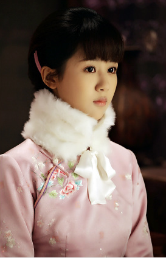

杨紫的演艺经历
1999年，杨紫参演个人首部影视作品《如此出山》，正式进入演艺圈 。
2002年，在古装历史情感剧《孝庄秘史》中饰演小宛如 。
2004年，主演青春校园喜剧片《女生日记》，在片中饰演小学六年级学生冉冬阳，这是其首部电影作品，她还凭借该片提名第12届中国电影童牛奖优秀儿童演员奖；
随后，与宋丹丹、高亚麟、张一山等联袂主演少儿题材的情景喜剧《家有儿女》，在剧中饰演青春亮丽、健康活力的夏雪 。
2005年，参演古装历史剧《少年康熙》，在剧中饰演小冰月 。
2006年，主演情景喜剧《家有儿女2》。
2008年6月29日，发行首张个人国语专辑《家有小雪》 ；
同年，与马可、林好领衔主演电视剧《男生日记》，饰演冉东阳 。
2009年，为亲子动画电影《淘气包马小跳》中的马小跳配音 ；
7月15日，主演的青春励志喜剧《女孩冲冲冲》首播，在剧中饰演活泼开朗、正直善良又有点驽钝和迷迷糊糊的大学生孙权 ；
同年，主演电影《男生女生》，饰演冉东阳 。
2010年，杨紫考入北京电影学院，成为2010级表演系学生 ；
同年，与马可、林好等主演电影《三班五班》，饰演冉东阳 。
2011年2月20日，与蒋雯丽、孙淳、曹翠芬等共同主演的家庭剧《幸福来敲门》播出，在剧中饰演叛逆少女宋征 。
2012年5月3日，参演的医疗剧《心术》于多个电视台联合播出，在剧中饰演护士张晓蕾 ；
8月23日，与骆达华合作主演的惊悚悬疑电影《守株人》上映，杨紫在片中饰演守株人佳佳，并为该片配唱主题曲《寂静的瓦砾》，她还凭借该片获得第14届中国电影表演艺术学会金凤凰奖新人奖
。
2013年2月23日，领衔主演的近代传奇轻喜剧《胭脂霸王》播出，在剧中饰演镖师雷儿，并为该剧配唱主题曲《胭脂花开》 ；
3月22日，与刘威、吴冕、张一山共同出演的家庭情感剧《老爸回家》首播，在剧中饰演极具个性的文艺青年林然然 ；
8月6日，参演的琼瑶剧《花非花雾非雾》在湖南卫视播出，在剧中饰演快乐单纯的女孩白梦华（烟花） 。
2014年3月8日，与霍建华合作主演的近代革命战争剧《战长沙》登陆央视，在剧中饰演战地医院护士胡湘湘，
以不同的气质演绎从少女时代的明丽活泼到为人妻为人母之后的端庄大气，
而该剧播出后成为豆瓣电影年度榜单评分最高的大陆电视剧 ；同年，杨紫从北京电影学院毕业 。
2015年1月11日，与朱亚文、李佳航、万茜联袂主演的现代军旅剧《天生要完美》在CCTV8播出，
在剧中饰演性格直爽且热情大方的军校学员安小惠 ；4月19日，参加的东方卫视明星旅行真人秀《花样姐姐第一季》
播出 ；8月7日，主演的青春爱情电影《时间都去哪了》上映，在片中饰演钢琴家林雨桐 ；

10月14日，领衔主演的红色年代传奇剧《大秧歌》首播，在剧中饰演深明大义的的吴家大小姐吴若云 ；
10月30日，参演的悬疑惊悚网剧《灵魂摆渡2》开播，在剧中出演《红月》《鬼妻》单元 。
2017年1月27日，杨紫登上央视春晚的舞台，与众多艺人共同演唱开场歌曲《美丽中国年》 ；5月8日，主演的传奇清装剧《龙珠传奇之无间道》播出，饰演俏皮可爱的前朝公主李易欢 ；
同年，主演都市女性励志剧《欢乐颂2》。
2018年2月15日，杨紫再次登上央视春晚的舞台，与林永健、李明启、戴春荣等共同表演小品《为您服务》 ；4月10日，客串的都市女性镜像剧《北京女子图鉴》在优酷独播，在剧中饰演了护士苗苗；4月28日，作为固定嘉宾加盟偶像对抗挑战真人秀《高能少年团第二季》 ；7月9日，主演的古装神话剧《天乩之白蛇传说》上线，在剧中饰演懵懂呆萌的白夭夭 ；8月2日，主演的古装神话剧《香蜜沉沉烬如霜》上星播出.11月26日，加盟新浪娱乐年终特别企划短片《最美表演》；12月31日，参加湖南卫视跨年演唱会，演唱歌曲《不染》 ；同年，杨紫获评2018福布斯中国UNDER30娱乐行业精英代表。
杨紫在剧中饰演的是花神之女锦觅，该剧以CSM52城平均收视率1.3%的成绩取得了全国同时段电视剧收视冠军，豆瓣7.7的评分刷新了近几年来古装神话剧的记录，杨紫个人也因此得到更多观众的认可 ，并连续成为了各热搜指数的话题人物，她还凭借该剧提名第24届华鼎奖中国古装题材电视剧最佳女演员奖
2019年2月4日，杨紫三登央视春晚的舞台，与众多艺人共同表演小品《站台》 ；2月5日，参加北京电视台春节联欢晚会，演唱歌曲《儿时》 ；5月28日，入驻北京杜莎夫人蜡像馆 ；7月9日，主演的青春励志言情剧《亲爱的，热爱的》播出，在剧中饰演活泼软萌的学霸萝莉、擅长编程的天才少女佟年，并为该剧配唱片尾曲《牛奶面包》，她还凭借该剧获得第26届华鼎奖中国当代题材电视剧最佳女演员奖 ；7月16日，作为固定嘉宾加盟餐厅经营类真人秀《中餐厅第三季》 ；8月1日，参演的消防题材电影《烈火英雄》在全国上映，在片中饰演外表坚强、内心柔软的防火监督员王璐 ，该片最终取得16.79亿人民币的票房成绩 ，杨紫凭借该片获得第16届广州大学生电影节最受大学生欢迎女配角奖，提名第35届大众电影百花奖最佳女配角奖、第11届澳门国际电影节最佳女配角奖 ；8月16日，与张家辉合作主演的犯罪动作电影《沉默的证人》上映 ，在片中饰演实习法医乔琳，并为该片演唱主题曲《打破沉默》；8月29日，都市爱情剧《我的莫格利男孩》在爱奇艺播出，在剧中饰演独立创业女性凌熙，并为该剧演唱片尾曲《有风的夜晚》 ；11月14日，确认主演由IP小说《簪中录》改编的电视剧《青簪行》，在剧中饰演女神探黄梓瑕 ；12月18日，获得第8届中国大学生电视节最受大学生瞩目女演员奖 ；12月31日，参加湖南卫视跨年演唱会，演唱歌曲《有可能的夜晚》；
杨紫在2019福布斯中国名人榜上位列第24名
2020年1月24日，杨紫四登央视春晚的舞台，与众多艺人共同表演歌舞《再次相约二十年》 ；1月25日，担任北京电视台春节联欢晚会代言人 ，并为晚会演唱歌曲《北京我的爱》 ；8月，客串都市励志剧《我的时代，你的时代》（原名《亲爱的，挚爱的》） ；随后，在2020福布斯中国名人榜上位列第13名；9月30日，参加2020央视国庆晚会《“中国梦·祖国颂”——2020国庆特别节目》，与朱一龙合唱歌曲《向上的光》 ；10月1日，参演的电影《我和我的家乡》上映，在徐峥执导的《最后一课》单元中饰演新乡女性姜紫丫；10月20日，获得第7届中国电视好演员优秀演员 ；11月10日，参演由赵薇发起的国内首部女性独白剧《听见她说》 ；12月4日，出演的奇幻电影《赤狐书生》在全国上映，在片中饰演被掳走做军师的“妖界第一镜”；12月20日，以“国宝守护人”身份参加中央广播电视总台大型文博探索节目《国家宝藏第三季》录制；12月31日，参加东方卫视跨年盛典，演唱歌曲《不染》《一个人喜欢一个人》《牛奶面包》《我们》 。
2020年杨紫再次饰演佟年
2021年2月28日，杨紫获得2020微博之夜“微博Queen”荣誉；3月5日，获得2021电视剧品质盛典“全能品质剧星”和“品质闪耀剧星”荣誉 ；4月2日，确认参演电视剧《沉香如屑》 ；5月4日，参加央视《奋斗正青春——2021年五四青年节特别节目》，与刘雨昕一同演唱歌曲《山水画卷》；5月14日，参加真人秀节目《向往的生活 第五季》 ；5月28日，参加的爱奇艺出品的沉浸式推理真人秀《萌探探探案》上映 ；7月1日，参加的庆祝中国共产党成立100周年文艺演出《伟大征程》播出，与于和伟、张桐、刘烨、白宇、邓伦、宋轶、杨洋、李现等合作表演《破晓》 ；11月15日，杨紫在社交媒体上发文，宣布与欢瑞世纪六年合约期满不再续约 ；11月16日，成立个人工作室 ；11月23日，与井柏然主演的都市暖心疗愈剧《女心理师》播出，在剧中饰演女心理师贺顿 ；11月，主演的电影《猎毒》正在拍摄中，在片中饰演缉毒警察骆佳 ；12月31日，参加《2021-2022湖南卫视跨年演唱会》，并表演《温蒂公主的侍卫》 。
与于和伟、张桐、刘烨、白宇、邓伦、宋轶、杨洋、李现等合作表演《破晓》
2022年2月3日，被官宣为2月15日的腾讯冬奥报道雪舞官；3月15日，与肖战领衔主演的现代都市情感剧《余生，请多指教》播出，，在剧中饰演睿智善良、充满艺术气息的S大音乐系大三学生林之校 ；3月28日，与张晚意主演的古装神话剧《长相思》开机；5月3日，参加河南卫视《“青春万岁”2022五四青年节特别节目》 。
 腾讯冬奥报道雪舞官
腾讯冬奥报道雪舞官